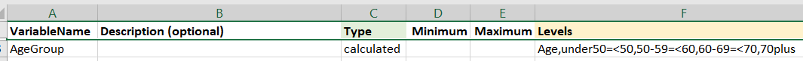

2.3 Calculated Variables
Currently three types of calculated variables are supported: survival variables, recoded variables and categorised variables.
When variables are re-coded or categorised a check is performed so that you can ensure the categories are created as expected and this is output to the log file.
2.3.1 Survival Variables
Survival variables are calculated from three date variables: the starting date (date of diagnosis or randomisation), the event date (date of progression, or death) and the final date of follow-up. From these variables two variables will be created: the survival duration and the censor indicator.
Syntax: start=startVar,event=eventVar,last=endVar
where startVar, eventVar and endVar are variable names in the data corresponding to the start date, the event date and the date of last follow-up.
Example survival calculation to use in the Data Dictionary:

Example of a survival calculation
This will cause two variables to be created: OS (this is the name given in the VariableName column) and OS_status (the variable name with _status appended to it). The status marker will be 1 if the event occurred, in this case if there is a value in the Date_Death column and 0 otherwise. The OS variable will give the time from DxDate until Date_Death, or if no Date_Death was recorded then the time from DxDate to Date_LFU.
2.3.2 Recoded Variables
Recoded variables are calculated from categorical or coded variables (as opposed to categorising a numerical variable)
Syntax: OrginalVar,newCode1=oldCode1,oldCode2,newCode2=oldCode3,oldCode4
where OriginalVar is the variable in the data to be recoded and newCodes=oldCodes gives the new category followed by comma-separated original categories.
Example of recoding a variable in the Data Dictionary:
Example of a recoded variable
This will create the T0_Stg variable from T_Stage. T0_Stg will be T0 if T_Stage is T0 and T1up for all other values of T_Stage.
2.3.3 Categorised Variables
Categorised variables are created from continuous variables
Syntax: OrginalVar,category1=<cutoff1,category2=<cutoff2,category3
where OriginalVar is the variable in the data to be categorised and category1,category2 etc are the names of the new categories (these will become factor levels) amd cutoff1,cutoff2 are the cut-offs for each category and the final category (in this case category3) does not have a cutoff, only a name, because all people not meeting earlier criteria will be in this level. Note that at this point it is only possible to create categories by specifying the upper bounds.
Example of categorising a continuous variable in the Data Dictionary:
 This will create the AgeGroup variable from Age with four levels: "under50’,‘50-60’,‘60-69’,‘70plus’